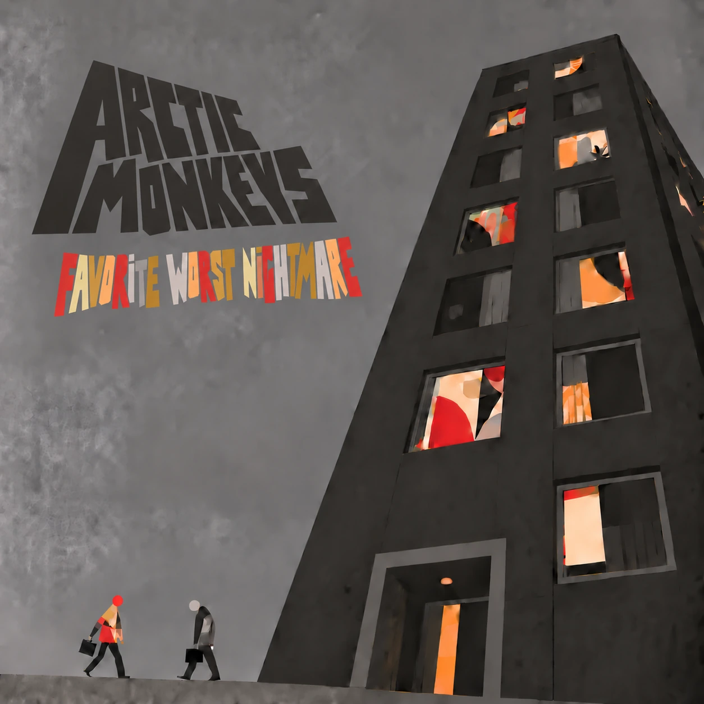
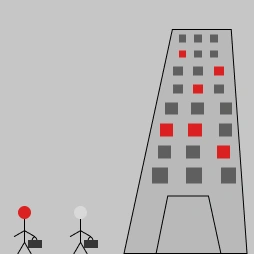
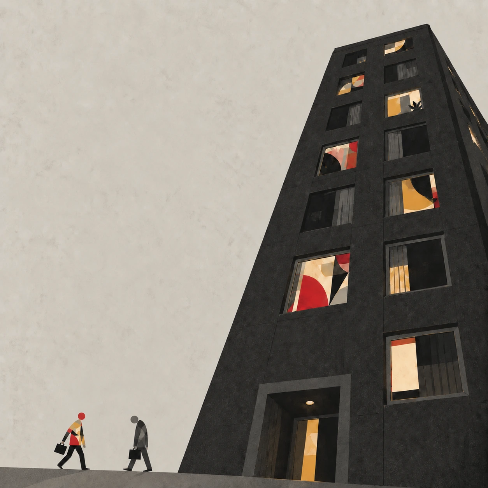
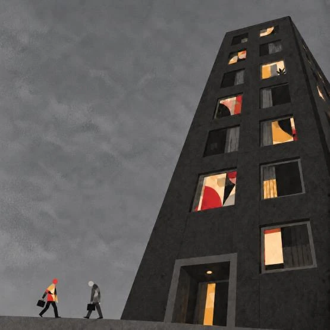
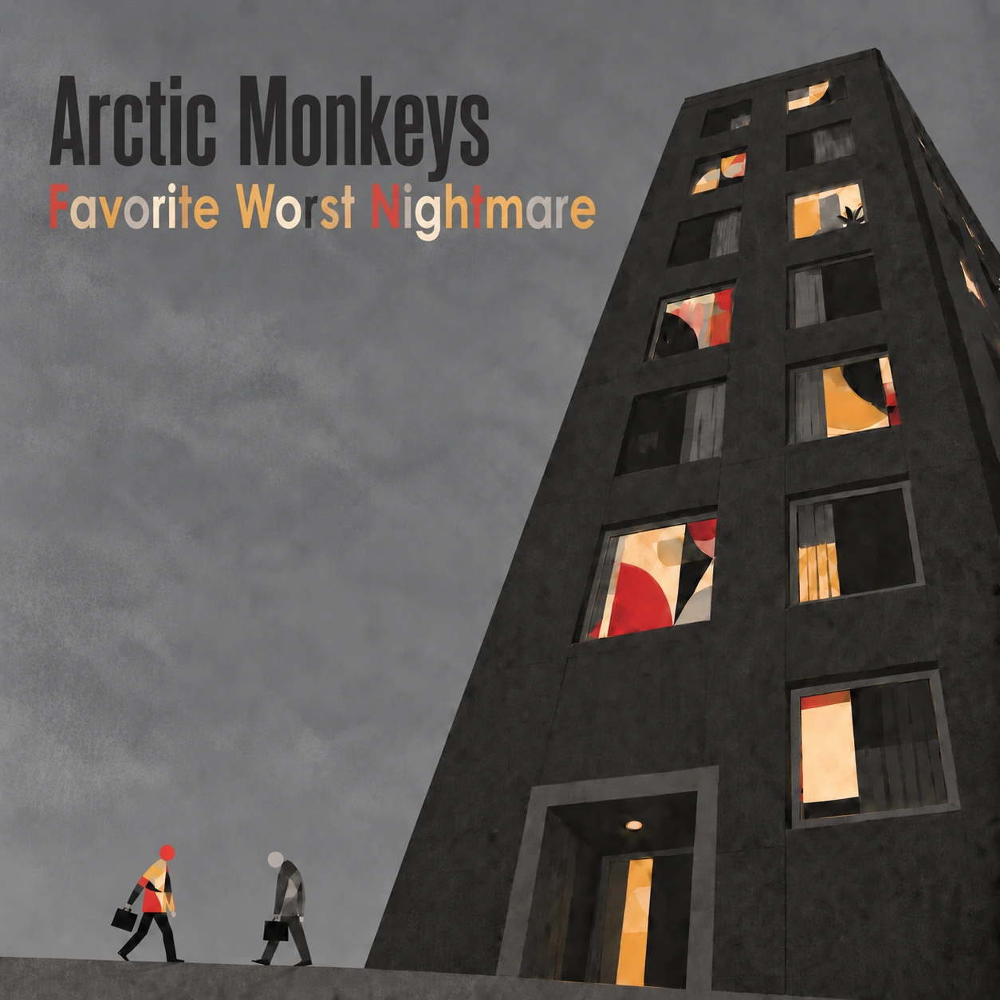

Favorite Worst Nightmare

A reinterpretation of an Arctic Monkeys album cover about burnout as school turns into work. One worker walks into the tower carrying the same colors as its lit windows, while another walks out drained to grey.
Composition



“Place the building approximately 85% from the left and 15% down from the top… The building should take up around 40% of the width… Keep the top 45% empty for later typography.”
Comparison

Typography
I kept 'Arctic Monkeys' in dark grey and gave the title the windows' abstract colors, because a single color was either too vibrant or too dull.
Student concept for DSC 598, not affiliated with the band or label. Reference: Arctic Monkeys, Favourite Worst Nightmare (2007)
Next project: Future Home 2035